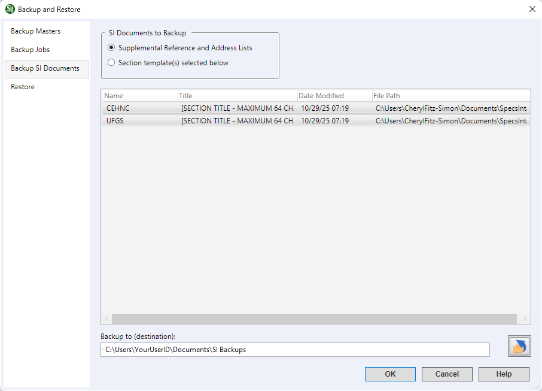

This command can also be executed from the SpecsIntact Explorer's Right-click menu.
The Backup and Restore command allows you to perform two key functions by enabling you to back up your MastersA collection of Masters consisting of the Unified Facility Guides Specifications (UFGS), local agency or company Masters, JobsA collection of projects, and SI Documents (e.g., Section TemplateIs an outline to be used as a guide in creating new specifications. The option to create Section templates on the Tools Menu or through Add Sections should be used to create unique section outlines, not new sections. New sections can be created for a Job or local Master. Revisions should not be used during the creation of a new Section from a Section Template., Supplemental Reference ListA custom file maintained by the user to include reference standards not found in the UFGS Master guide specifications) and allowing you to restore these files from previously created backup versions.
The Backup SI Documents tab allows you to create a BackupA process used to backup a Job, Master, Supplemental Reference List, or Templates from the specified location (Drive or other device) of the SI Documents. The backup process generates a zipped backup file of the Supplemental Reference List (Supp_S.zip) or the Section Template (Section_T.zip), compressing all the SI Document files into a single zip file to save storage space.
 For optimal data safety, we strongly advise backing up your SI Documents to a location different from where it's currently stored. Ideally, use a separate drive (e.g., local or network drive or a third-party cloud storage service like OneDrive) for this backup to protect against data loss if network or hardware failures should occur. To learn more about restoring the SI Documents, refer to the Backup and Restore window's Restore tab topic.
For optimal data safety, we strongly advise backing up your SI Documents to a location different from where it's currently stored. Ideally, use a separate drive (e.g., local or network drive or a third-party cloud storage service like OneDrive) for this backup to protect against data loss if network or hardware failures should occur. To learn more about restoring the SI Documents, refer to the Backup and Restore window's Restore tab topic.
 Click the tabbed commands on the image below to see how to use each function.
Click the tabbed commands on the image below to see how to use each function.

- SI Documents to Backup - This feature allows you to manage which SI Document files (e.g., Supplemental Reference List, Supplemental Address List, or Section Template) are backed up.
- Backup to (destination) - Specifies where the SI Document backups will be saved. To set or change the location, type the path directly into the field or click the Change Destination button to browse and select a new location or create a new folder.
Standard Windows Commands
 The OK button will execute and save the selections made on all of the tabs.
The OK button will execute and save the selections made on all of the tabs.
 The Cancel button will close the window without recording any selections or changes entered.
The Cancel button will close the window without recording any selections or changes entered.
 The Help button will open the Help Topic for this window.
The Help button will open the Help Topic for this window.
How To Use This Feature
To Backup a SI Document:
- In the SpecsIntact Explorer's Available Projects pane, perform one of the following:
- Right-click and select Backup and Restore
- Select the File menu and select Backup and Restore
- Select the Backup SI Documents tab
- Below SI Documents to Backup, perform one of the following:
- Click Supplemental Reference and Address Lists
- Click Section template(s) selected below, then select a document from the list
- Below Backup to (destination), perform one of the following:
- Type the backup location (path)
- Click the Change Destination button, browse and select a new location, or create a new folder, then click Select Folder
- Use the existing location
- Click OK
- If the Backup SI Documents window appears indicating an existing archive file was detected, perform one of the following:
- Select Overwrite Archive (e.g. Supp_S.zip or Section_T.zip)
- Select Create New to create incremental archives (e.g. Supp_S1.zip, Supp_S2.zip, Section_T1.zip, Section_T2.zip, etc.)
- On the Backup File Created window, click OK
Users are encouraged to visit the SpecsIntact Website's Support & Help Center for access to all of our User Tools, including Web-Based Help (containing Troubleshooting, Frequently Asked Questions (FAQs), Technical Notes, and Known Problems), eLearning Modules (video tutorials), and printable Guides.